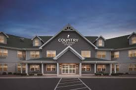
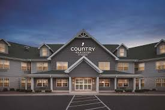

Menomonee Falls, Wisconsin, offers a variety of accommodations to suit different preferences and budgets. The Hilton Garden Inn Milwaukee Northwest/Menomonee Falls provides modern amenities including an indoor pool and on-site restaurant, while Home2 Suites by Hilton Menomonee Falls Milwaukee features extended-stay suites with kitchenettes and complimentary breakfast. For a boutique experience, the Clarke Hotel in nearby Waukesha offers elegant rooms and a historic ambiance. Vacation rental options like Airbnb and VRBO provide personalized stays ranging from cozy apartments to entire homes. The Radisson Hotel Milwaukee NW (Menomonee Falls) offers comfortable rooms and convenient access to local attractions. Budget-friendly choices include Motel 6 Milwaukee West - Brookfield, which offers basic amenities and a strategic location. Additionally, there are local bed and breakfasts and smaller inns that provide a quaint and intimate lodging experience. For those seeking more unique accommodations, there are several charming cottages and cabins available for rent in the area. These options ensure visitors can find the perfect place to stay while exploring the charming village of Menomonee Falls and its surroundings.
 
